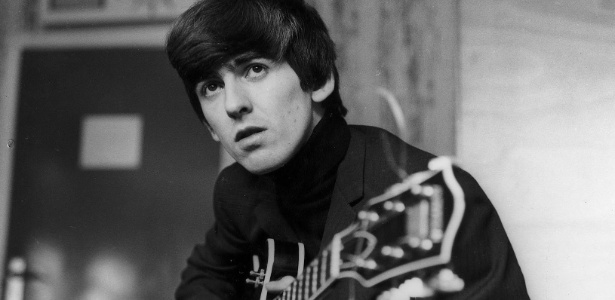
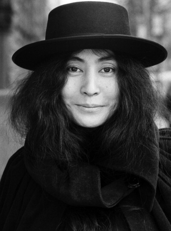

One member of the studio personnel closely involved with the LP [Abbey Road], who prefers to remain anonymous, recalls a very bitter row between John Lennon and George Harrison during the time that Yoko was attending sessions in her double-bed. ‘She got up and took a digestive biscuit off the top of George’s Leslie speaker cabinet. George saw this from the control room window and got into a big argument with John. The biscuit thing was soon forgotten; it seemed to me that they just wanted an excuse to argue, to air their pent-up resentments.
 